Diagramme zusammenfügen und anordnen
Customize-Merge-Arrange-Graph
Zusammenfassung
Im Dialog Grafikfenster zusammenfügen können Sie die Auswahl der Diagramme, die Sie zusammenfügen möchten, unter allen Diagrammen in Ihrem Projekt wählen. Er besitzt außerdem Einstellungen zum Festlegen, wie Sie die einzelnen Diagramme auf der neuen Seite angeordnet haben möchten.
Mit der Symbolleiste Objekt bearbeiten können Sie ganz einfach mehrere Layer ausrichten und sie in der Größe verändern.
Der Dialog Layer Management lässt Sie auf einer einzelnen Diagrammseite Layer hinzufügen, anordnen und verknüpfen.
Mit der Minisymbolleiste (seit Origin 2020) können Sie die Diagrammelemente einfacher und interaktiver bearbeiten.
Was Sie lernen werden
Dieses Tutorial zeigt Ihnen, wie Sie:
- Layer schnell in der Größe verändern und ausrichten,
- eine zweite Achse mit einem nichtlinearen Verhältnis zur ersten Achse hinzufügen,
- die Layerverwaltung zum komplexeren Positionieren und Verknüpfen von Layern verwenden,
- mehrere Grafiken in einer Grafik zusammenfügen.
Layer mit Hilfe der Symbolleiste Objekt bearbeiten ausrichten
- Wählen Sie Datei: Öffnen und öffnen Sie das Projekt \Samples\Graphing\Layer Management.opj. Gehen Sie zu dem Unterordner Arranging Layers. (Wenn Sie die Unterordner nicht sehen können, klicken Sie auf Ansicht: Projekt Explorer, um das Fenster des Projekt Explorers von Origin zu öffnen.)
- Verwenden Sie das Hilfsmittel Objekt bearbeiten, um das Diagramm neu anzuordnen. Daher müssen Sie sicherstellen, dass die Symbolleiste sichtbar ist. Sollte sie dies nicht sein, können Sie sie über Ansicht: Symbolleisten öffnen.
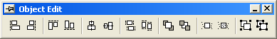
- Halten Sie auf dem Diagramm die Shift-Taste gedrückt und klicken Sie auf alle vier Layer, um sie als Gruppe auszuwählen. Drücken Sie dann auf die Schaltflächen Gleiche Breite
 und Gleiche Höhe
und Gleiche Höhe  auf der Symbolleiste Objekt bearbeiten, um eine einheitliche Höhe und Breite für sie festzulegen. Klicken Sie dann auf die weiße Fläche im Layer, um alle Diagrammlayer zu deaktivieren.
auf der Symbolleiste Objekt bearbeiten, um eine einheitliche Höhe und Breite für sie festzulegen. Klicken Sie dann auf die weiße Fläche im Layer, um alle Diagrammlayer zu deaktivieren.
- Halten Sie die Shift-Taste gedrückt und klicken Sie auf die zwei unteren Layer, um sie auszuwählen. Klicken Sie dann auf die Schaltfläche Unten
 auf der Symbolleiste Objekt bearbeiten, um sie auszurichten. Klicken Sie dann auf die weiße Fläche im Layer, um alle Diagrammlayer zu deaktivieren.
auf der Symbolleiste Objekt bearbeiten, um sie auszurichten. Klicken Sie dann auf die weiße Fläche im Layer, um alle Diagrammlayer zu deaktivieren.
- Halten Sie die Shift-Taste gedrückt, markieren Sie entsprechend die beiden oberen Layer und klicken Sie dann auf die Schaltfläche Oben
 , um sie auszurichten. Klicken Sie dann auf die weiße Fläche im Layer, um alle Diagrammlayer zu deaktivieren.
, um sie auszurichten. Klicken Sie dann auf die weiße Fläche im Layer, um alle Diagrammlayer zu deaktivieren.
- Markieren Sie den oberen und unteren Layer auf der linken Seite und klicken Sie auf die Ausrichtungsschaltfläche Links
 . Klicken Sie dann auf die weiße Fläche im Layer, um alle Diagrammlayer zu deaktivieren.
. Klicken Sie dann auf die weiße Fläche im Layer, um alle Diagrammlayer zu deaktivieren.
- Wählen Sie die beiden Layer auf der rechten Seite aus und klicken Sie auf die Schaltfläche Rechts
 .
.
- Speichern Sie die Änderungen nicht in Ihrem Projekt, da das gleiche Projekt später verwendet wird, um die Layerverwaltung zu erläutern.
 |
Die Symbolleiste Objekt bearbeiten bietet Ihnen eine Möglichkeit, Layer schnell auszurichten und in der Größe zu verändern. Der erste Layer, den Sie auswählen, ist der Referenzlayer. Alle anderen werden in Relation zu diesem zuerst ausgewählten Layer angepasst. Das Hilfsmittel Layer-Management bietet zusätzliche Optionen wie Neuanordnung und Verknüpfung von Layern.
|
|
Eine andere Möglichkeit, Layer in einem Diagramm mit mehreren Layern auszuwählen, besteht darin, Strg oder Shift zu drücken, während Sie auf die Layersymbole des Diagramms klicken.
|
Gegenüberliegende Achsen mit nichtlinearer Formel anzeigen
Ein 2D-Diagrammlayer von Origin ist eine Zusammenstellung von X- und Y-Achsen. Zu beiden können gegenüber liegende Achsen angezeigt werden. Außerdem kann die gegenüberliegende Achse auch mit Hilfe einer benutzerdefinierten nichtlinearen Formel in Bezug auf die primäre Achse die Beschriftungen anzeigen.
- Wechseln Sie im Fenster des Projekt Explorers zu dem Unterordner Nonlinear Axis.
- Aktivieren Sie das Diagrammfenster und klicken Sie auf die unteren X-Achsenlinien. Die Minisymbolleiste wird angezeigt. Klicken Sie auf die Schaltfläche Gegenüberliegende Achse zeigen, um die obere X-Achse zu zeigen.
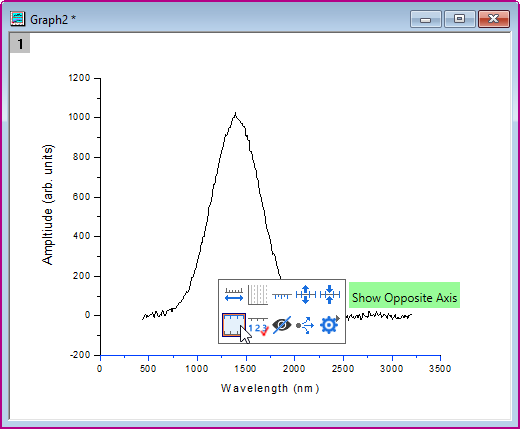
- Die obere X-Achse wird auf dem Layer angezeigt. Klicken Sie auf die Achsenlinie, um die Minisymbolleiste zu erweitern. Klicken Sie auf die Schaltfläche Hilfsstrichsbeschriftungen zeigen, um die Achsenbeschriftungen anzuzeigen. Klicken Sie dann auf die Schaltfläche Hilfsstrichsstil, um die Hilfsstriche auf Innen zu setzen.
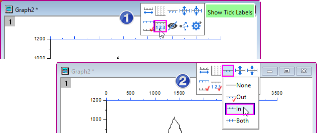
- Klicken Sie doppelt auf die Achsenbeschriftungen der oberen X-Achse, um die Registerkarte Beschriftung der Hilfsstriche des Dialog Achsen zu öffnen. Sie möchten die Beschriftungen auf der oberen Achse in Energieeinheiten anzeigen. Das Verhältnis zwischen Wellenlänge (untere X) und Energie (obere X) ist:
Energie (eV) = 1240/Wellenlänge (nm). Geben Sie also 1240/x im Feld Formel ein.
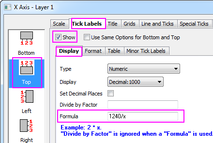
- Klicken Sie auf OK. Die Achsenbeschriftungen zeigen das korrekte Verhältnis zur unteren X.
|
- Auch wenn Sie ein nichtlineares Verhältnis für die rechte Y-Achse einrichten, müssen Sie in der Formel x statt y verwenden.
- Sie können ähnliche Einstellungen auch im Dialog Grafik: Layerverwaltung vornehmen, um eine gegenüber liegende Achse hinzuzufügen:
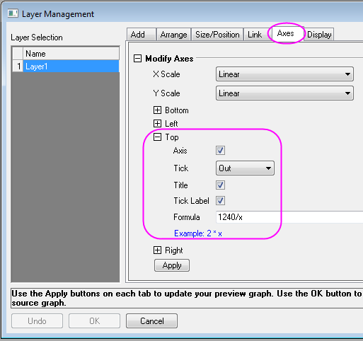
|
- Fügen Sie ein Textobjekt Energy (eV) als den oberen X-Achsentitel ein:
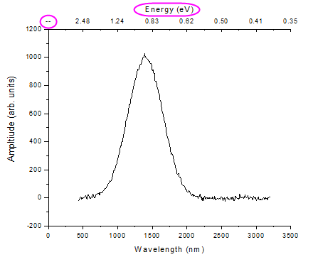
- In dem Bild oben ist die erste Hilfsstrichsbeschriftung der oberen Achse ein fehlender Wert für Energie, der der Wellenlänge bei 0 entspricht. Um ihn zu verbergen, klicken Sie auf die obere Achsenlinie, um die Minisymbolleiste zu zeigen. Klicken Sie auf die Schaltfläche Dialog Achse, um Spezielle Hilfsstriche im Kontextmenü auszuwählen. Der Dialog Spezielle Hilfsstriche wird geöffnet.
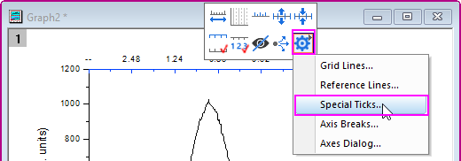
- Wählen Sie im geöffneten Dialog Achsenbeginn im linken Bedienfeld und wählen Sie dann Verbergen in der Auswahlliste Zeigen. Klicken Sie auf OK, um diese Einstellungen anzuwenden und den Dialog Achsen zu schließen.
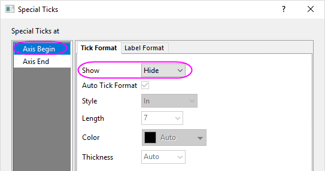
Layerverwaltung zum Verknüpfen und Positionieren von Layern verwenden
Das Hilfsmittel Layer-Management kann verwendet werden, um Layer zu positionieren, in der Größe zu verändern, austauschen und zu verknüpfen:
- Öffnen Sie erneut das Projekt \Samples\Graphing\Layer Management.opj und wechseln Sie dann in den Unterordner mit dem Namen Arranging Layers. Sie können das Projekt wieder öffnen, indem Sie Datei: Zuletzt verwendete Projekte: Layer Management.opj auswählen. Speichern Sie keine Änderungen im Projekt.
- Rufen Sie das Hilfsmittel Layer Management über Grafik: Layer-Verwaltung auf. Klicken Sie dann im linken Bedienfeld auf den Namen, um die die Layernamen umzubenennen, so dass sie von oben nach unten folgende Reihenfolge haben: Peak 1, Peak 2, Peak 3, Peak 4. Die Layernamen entsprechen jetzt der Legende für jeden Layer.
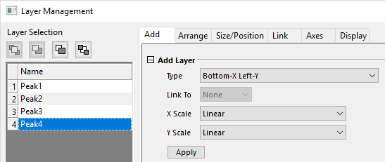
- Wechseln Sie jetzt zur Registerkarte Anordnen und tun Sie Folgendes:
- Aktivieren Sie das Kontrollkästchen Achsenrahmen zeigen.
- Setzen Sie den Horizontalen Abstand und den Vertikalen Abstand auf 0.
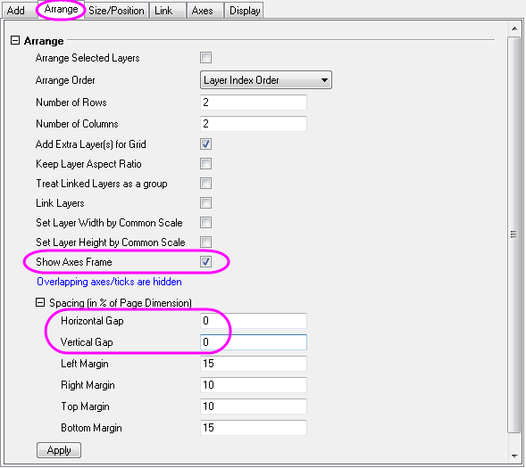
- Klicken Sie auf Übernehmen.
Auf diese Weise werden die Layer in der Größe verändert und neu positioniert, so dass sie ausgerichtet sind, und Hilfsstriche und Beschriftungen werden an den Stellen ausgeblendet, wo sich Layer überschneiden.
- Gehen Sie zur Registerkarte Achsen, halten Sie die Strg-Taste gedrückt und wählen Sie Peak 1 und 3 in der Liste auf der linken Seite aus. Erweitern Sie den Zweig Links und setzen Sie die Richtung der Hilfsstriche auf Innen. Klicken Sie dann auf Anwenden.
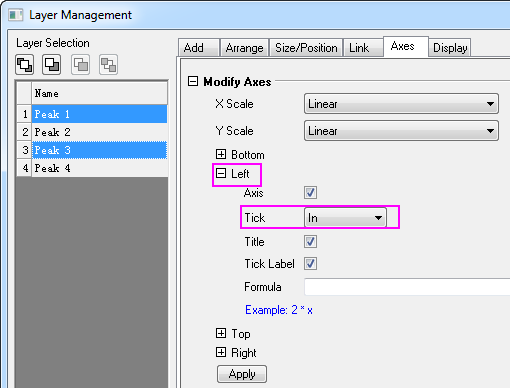
- Wählen Sie jetzt Peak 3 und 4 aus, ändern Sie die Richtung der Hilfsstriche von Unten auf Innen und klicken Sie auf Anwenden. Wählen Sie dann Peak 1 und 2, setzen Sie die Hilfsstriche von Oben auf Innen und klicken Sie auf Anwenden.
- Wechseln Sie jetzt zur Registerkarte Verknüpfung und wählen Sie Peak 2, 3 und 4 in der linken Liste aus. Verknüpfen Sie sie mit Layer 1, wobei Sie sicherstellen, dass die X-Achsen mit Gerade (1 zu 1) verknüpft haben, und klicken Sie auf Anwenden.
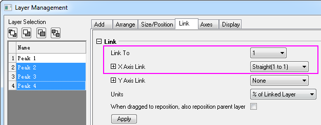
Klicken Sie auf OK, um den Dialog zu schließen.
- Klicken Sie auf das obere linke Layer, d.h. Layer 1, und verändern Sie es dann durch Ziehen in der Größe ud verschieben Sie es. Beachten Sie, dass die Unterlayer sich entsprechend mit verändern, da sie durch die Dimension mit Layer 1 verknüpft sind.
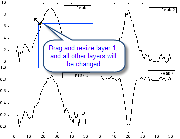
- Klicken Sie auf die obere Achse von Layer 1 und klicken Sie dann auf die Schaltfläche Achsenskalierung in der Minisymbolleiste. Der Dialog Achsenskalierung wird geöffnet. Ändern Sie die Skalierung in Von 10 Bis 35 und klicken Sie auf OK. Sie werden sehen, dass alle anderen Layer jetzt im gleichen Skalierungsbereich der X-Achse angezeigt werden.
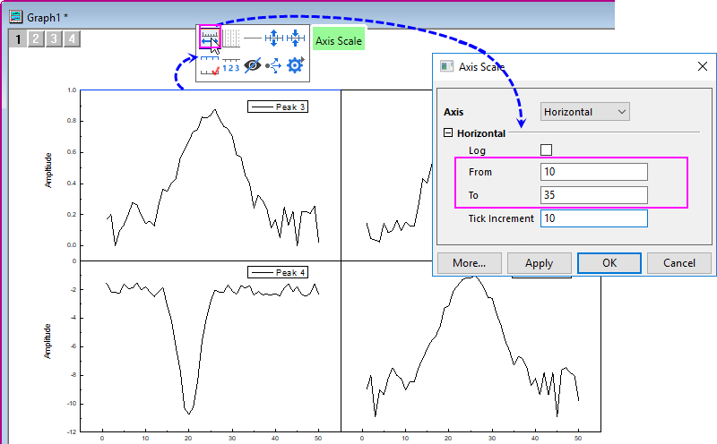
|
Wenn die Layer verknüpft werden, werden sie als eine Einheit behandelt. Wenn Sie die Layer neu angeordnet werden, sollten Sie zuerst die Verknüpfung aufheben. Sie können sie nach der Neuanordnung neu verknüpfen.
|
Mehrere Diagramme zusammenfügen
In diesem Abschnitt fügen Sie zwei Diagramme aus unterschiedlichen Unterordnern aus demselben Projekt zusammen, während die Layer wie eine Einheit behandelt werden.
- Klicken Sie bei aktivem Graph 1 aus dem Unterordner Arranging Layers auf die Schaltfläche Neu skalieren.
- Wählen Sie Grafik: Grafikfenster zusammenfügen im Hauptmenü, um den Dialog zu öffnen.
- Tun Sie folgendes:
- Klicken Sie auf die dreieckige Schaltfläche rechts von Diagramme und wählen Sie im Ausklappmenü Alle im Projekt. Graph1 und Graph2 werden im Feld Vorschau gezeigt (nicht gezeigt).
- Stellen Sie sicher, dass Anzahl der Zeilen = 2 und Anzahl der Spalten = 1.
- Stellen Sie sicher, dass Jedes Quelldiagramm als eine Einheit behandeln aktiviert ist.
- Setzen Sie das Vertikaler Abstand auf 20.
- 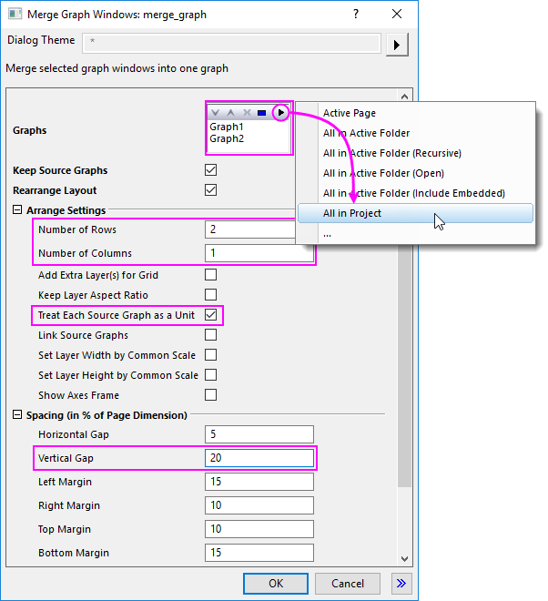
- Klicken Sie auf OK, um den Dialog zu schließen. Es wird ein neues Diagramm erstellt.
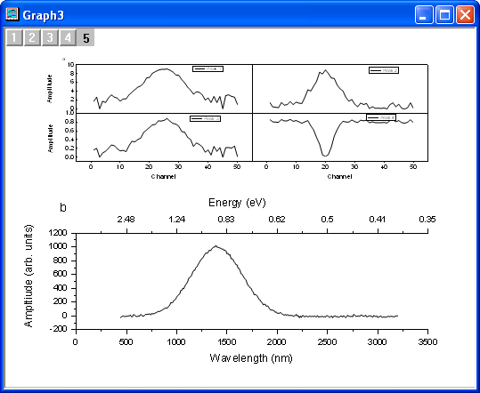